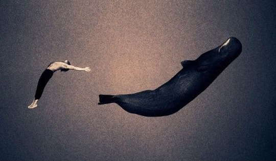

如果时间以1/2的速度流过……
如果自然将我和它们这样带走……
如果这就是永生，我愿意这样死去……
起初看完这个电影，我实在无法言语，在我看来，任何的语言描述都是徒劳，在这样纯美的自然之景面前，我们所能做的只能是顶礼膜拜，不是对这部影片，而是对影片背后，人类周围的这个大自然。这是一部让你要屏住呼吸去观看的影片。与其说这是一部电影，不如说这就是摄影师Gregory Colbert的摄影集。以纪录片为载体，Gregory Colbert用音乐和文字将自己长期以来对于大自然的崇敬之作串联起来，形成一部动静得益的影片。用他自己的话来说，就是通过镜头来寻找动物与人类的共同语言以及动物本身的诗意感性，毫无疑问，他做到了，而且用摄影集以外的形式，让更多的人共享了他的发现。我想，如果没有这部记录片，我大概是不会知道Gregory Colbert其人，也不会看到这么多震憾人心的作品。 人类与动物的感应，就在这样流淌的时空、音乐中开始，缓慢的肢体语言的交错，到最后凝固成永恒。
A world without beginning or end, here or there, past or present.
